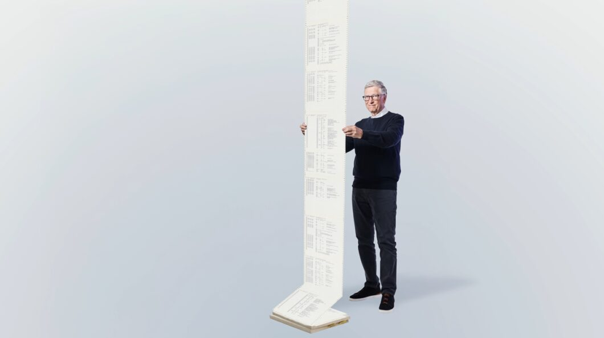

No dia 4 de abril de 2025, a Microsoft completará 50 anos de existência. Como parte das celebrações do aniversário, Bill Gates tomou uma decisão inusitada: divulgou um documento com o código-fonte que deu origem à companhia. Mas a Microsoft não é um software, então, como assim? O próprio Gates explica logo no início de sua publicação: “antes de existir o Office, o Windows 95, o Xbox ou a IA, havia o Altair Basic”. Gates conta que, em 1975, viu a foto do computador Altair 8800 em uma capa da revista Popular Electronics. Então, ele e seu amigo Paul Allen, ambos estudantes de Harvard, entraram em contato com a MITS, empresa responsável pelo computador, e ofereceram uma versão da linguagem de programação Basic capaz de rodar com o chip do Altair 8800. Mas a verdade é que não havia versão nenhuma. Depois que a MITS topou conhecer a proposta, Gates e Allen passaram dois meses trabalhando dia e noite para criar a tal versão do Basic. No fim das contas, o código foi apresentado a Ed Roberts, presidente e fundador da MITS. O executivo gostou do que viu e concordou em licenciar o interpretador de Basic para o Altair 8800. “O Altair Basic tornou-se o primeiro produto da nossa nova empresa, que decidimos chamar de Micro-Soft (mais tarde nós removemos o hífen)”, comenta Bill Gates, que completou: Gates compartilhou o código do Altair Basic Além de contar o início da história da Microsoft, Bill Gates compartilhou o código-fonte do Altair Basic em um arquivo PDF. Isso porque o documento foi digitalizado a partir de um impresso produzido em 1975, ano em que o projeto foi lançado, dando origem à Microsoft Fonte: Saiba mais